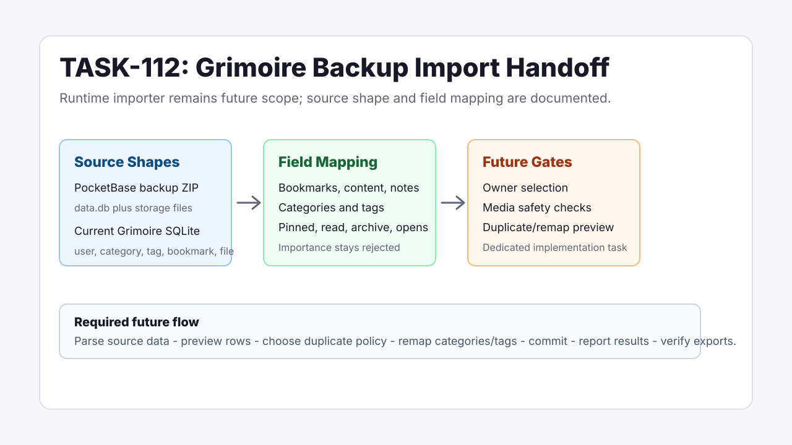

Grimoire Task Report
Grimoire Backup Import Shape

Before
TASK-112 was deferred because browser/Netscape import review, duplicate handling, remapping, result reports, and parity exports needed to stabilize first. The remaining acceptance item was the missing Grimoire backup data shape and field mapping.
Problem
Future direct import work would have had to rediscover the Grimoire migration model and risk bypassing Little Imp's normal preview, remapping, duplicate-policy, and result-report safeguards.
Changes Added
- Documented legacy PocketBase backup ZIP and current Grimoire SQLite source shapes.
- Mapped Grimoire bookmark, category, tag, media, read/archive, pinned, notes, and open-metric fields to Little Imp targets.
- Linked the handoff through parity, roadmap, release-checklist, task-board, and report indexes.
Boundary
No runtime importer, API route, or UI was added. Direct Grimoire/PocketBase import remains future scope until a dedicated implementation task is reopened.
Verification
- Rechecked public TASK-078/TASK-079 artifact URLs; unauthenticated installer and archive URLs still returned
404. - Reviewed Grimoire migration source files and Little Imp import/schema prerequisites.
- Ran focused documentation checks and whitespace diff validation.
Implementation Notes
The source document explicitly preserves the current local-first boundary: no multi-user account import, no endpoint aliases, no manual importance mapping, no PocketBase runtime dependency, and no direct SQLite restore path. Future work should normalize source data into Little Imp's existing import preview model.
Files Changed
docs/parity/grimoire-backup-import-shape.mddocs/parity/grimoire-feature-parity-report.mddocs/parity/grimoire-parity-task-proposals.mddocs/roadmap.mddocs/release-checklist.mdtasks/README.mdtasks/done/TASK-112-future-grimoire-backup-import.mddocs/task-reports/2026/06/2026-06-02-task-112-grimoire-backup-import-shape/index.html